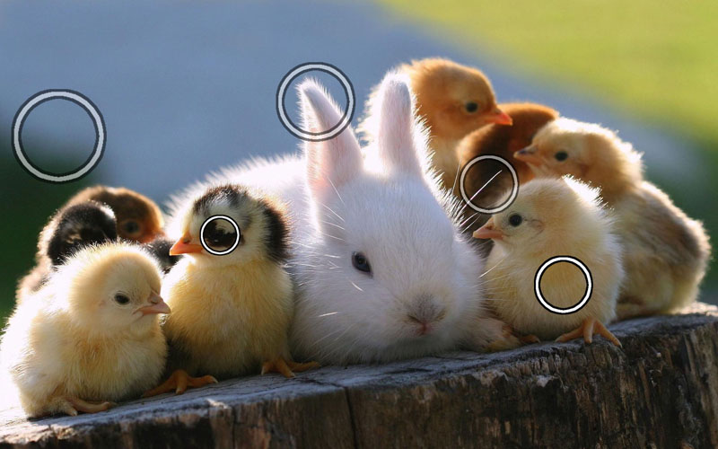

Bunny and Chicks

Critiques
These areas are in the shadow and I think they would look better if they were in light.
Great focus! I love how the whiskers and fur stand out!
I like how the background is blurred so the animals stand out.
Critiques